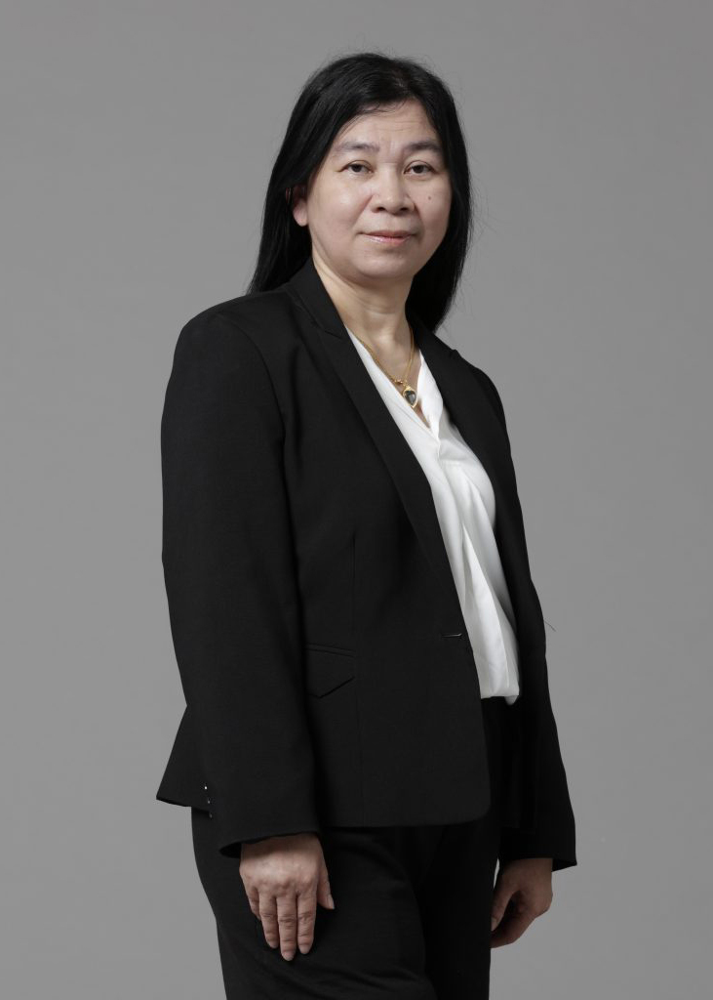
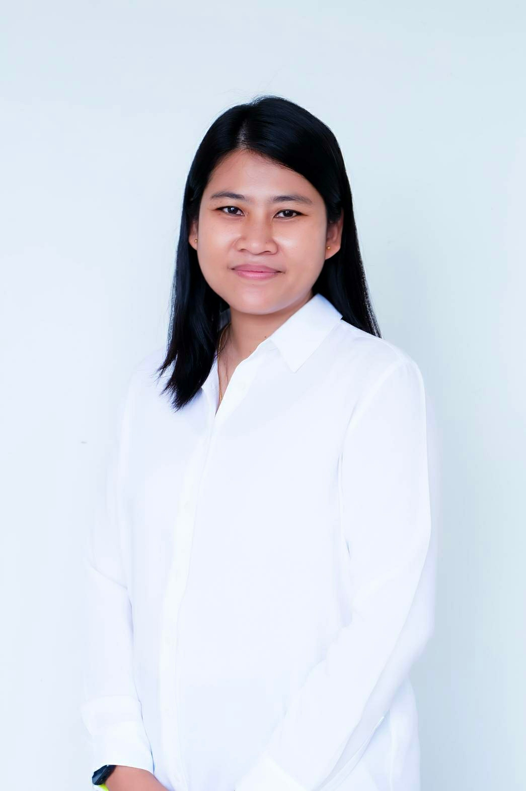

คณาจารย์

ดร.ปิยะ ถิรพันธุ์เมธี
Piya Thirapanmethee, Ph.D.
อาจารย์
คุณวุฒิ
ปร.ด.(เทคโนโลยีสารสนเทศและการสื่อสารเพื่อการศึกษา) มหาวิทยาลัยเทคโนโลยีพระจอมเกล้าพระนครเหนือ
Ph.D. (Information and Communication Technology for Education) King Mongkut's University of Technology North Bangkok
วท.ม. (เทคโนโลยีสารสนเทศ) มหาวิทยาลัยเทคโนโลยีพระจอมเกล้าธนบุรี
M.Sc. (Information Technology) King Mongkut's University of Technology Thonburi
อส.บ. (เทคโนโลยีอิเล็กทรอนิกส์) สถาบันเทคโนโลยีพระจอมเกล้าเจ้าคุณทหาร ลาดกระบัง
B.Ind.Tech. (Electronics) King Mongkut's Institute of Technology Ladkrabang
ประสบการณ์สอน
» โครงสร้างข้อมูล (Data Structure)
» เครือข่ายคอมพิวเตอร์ (Computer Network)
» ระบบปฏิบัติการ (Operating System)
» วิศวกรรมซอฟต์แวร์ (Software Engineering)
» ความมั่นคงของระบบสารสนเทศ (Information System Security)
» การจัดระเบียบคอมพิวเตอร์และสถาปัตยกรรม(Computer Organization and Architecture)
» ดิจิทัลอิเล็กทรอนิกส์ (Digital Electronics)
» การประมวลสัญญาณดิจิตอล (Digital Signal Processing)
» การจัดการองค์กรและระบบสารสนเทศ (Management Information System in Organization)
สาขางานวิจัย
» Computer Network
» Information and Communication Technology for Education
เอกสารงานวิจัย
วารสารวิชาการระดับชาติ
» รัชนี วงศ์มาตย์, สมฤดี เทียมมีเชาว์ และปิยะ ถิรพันธุ์เมธี. 2563. “ระบบลงชื่อเข้าชั้นเรียนด้วยราสเบอรี่พายและคิวอาร์โค้ด”.วารสารวิทยาศาสตร์และเทคโนโลยี
มทร. กรุงเทพ. ปีที่ 1, ฉบับที่ 2: 12-18.
» ปิยะ ถิรพันธุ์เมธี และ พัลลภ พิริยะสุรวงศ์. 2557. “การพัฒนารูปแบบเฟรมเวิร์คธนาคารข้อสอบบนระบบประมวลผลแบบกลุ่มเมฆ” วารสารวิชาการและวิจัยมหาวิทยาลัยเทคโนโลยีราชมงคลพระนคร. ปีที่ 8, ฉบับที่ 2 (กันยายน): .
» ปิยะ ถิรพันธุ์เมธี และ พัลลภ พิริยะสุรวงศ์. 2556. “ระบบประมวลผลแบบกลุ่มเมฆกับสถาบันการศึกษา” วารสารวิจัยมหาวิทยาลัยเทคโนโลยีราชมงคลกรุงเทพ. ปีที่ 7, ฉบับที่ 2 (กรกฎาคม – ธันวาคม): .
» ปิยะ ถิรพันธุ์เมธี 2556. “มาตรฐานผู้ให้บริการระบบประมวลผลแบบกลุ่มเมฆ” วารสารการอาชีวะและเทคนิคศึกษา. ปีที่ 3, ฉบับที่ 6 (มิถุนายน-ธันวาคม): .
» ปิยะ ถิรพันธุ์เมธี และ ณมน จีรังสุงรรณ. 2556. “รูปแบบการเรียนวิชาโครงงานโดยอาศัยความร่วมมือกับสถานประกอบการผ่านแฟ้มสะสมงานอิเล็กทรอนิกส์.” วารสารวิทยสุวรรณภูมิ. ปีที่ 1, ฉบับที่ 2 (มกราคม – มีนาคม) .
International Conferences
» Piya Thirapanmethee, Jirayu Tancharoen, Khananat Sae-Tang, Nilubon Bootchai, Sirion Nutphadung, and Orasa Patsadu. 2023. "Abnormal Corner of Mouth Fall Detection of Stroke Patient Using Camera." In Proc. Of the the 19th International Conference on Computing and Information Technology (IC2IT 2023), Lecture Notes in Networks and Systems 679, https://doi.org/10.1007/978-3-031-30474-3_3, 2023, pp.27-39.
» Monrada Sirimongkol, Piya Thirapanmetee, Sureeporn Nualnim and Sudjai Ngamsuriyapong. 2017. "Development of Learning Media using Augmented Reality." The 11th National Conference and 2017-1 International Conference on Applied Computer Technology and Information Systems and 2017-1 National Conference on Businese Administration. January 25. Southeast Bangkok College: 6-9.
» Pattarawan Sea-Heng and Piya Thirapanmetee. 2016. "Development of Electronic Media Using Augmented Reality for Thai Lessons of Primary 2." Proceedings of the 7th Rajamangala University of Technology International Conference (7th RMUTIC). August 24-26. Rajamangala University of Technology Krungthep.
» Piya Thirapanmethee and Pallop Piriyasurawong. 2014. “The Development of Item Bank Software Framework” The 5th Rajamangala University of Technology International Conference (5th RMUTIC). 23-25 July Rajamangala University of Technology Suvarnabhumi.
งานประชุมวิชาการระดับชาติ
» สุเมธ ใจเย็น, วรัญญา ทัศนศร, วิภาวรรณ อากาศวรรธนะ และปิยะ ถิรพันธุ์เมธี. 2560. "การพัฒนาสื่ออิเล็กทรอนิกส์โดยใช้เทคโนโลยีเสมือนจริง วิชาสุขศึกษา ระดับชั้นประถมศึกษาปีที่ 3." การประชุมวิชาการระดับชาติด้านวิทยาการจัดการ ประจำปี 2560 ครั้งที่ 1. 16 มิถุนายน. มหาวิทยาลัยราชภัฏบ้านสมเด็จเจ้าพระยา: 346-357.
» มนรดา ศิริมงคล, ปิยะ ถิรพันธุ์เมธี, สิริอร นุชผดุง และสุเมธ ใจเย็น. 2560. "ระบบพิพิธภัณฑ์ศิลปินภาพถ่ายโดยใช้เทคโนโลยีเสมือนจริง." การประชุมวิชาการระดับชาติวิทยาศาสตร์และเทคโนโลยี ครั้งที่ 1. 19 มกราคม. มหาวิทยาลัยเทคโนโลยีราชมงคลสุวรรณภูมิ ศูนย์พระนครศรีอยุธยา หันตรา: 159-168.
» ปิยะ ถิรพันธุ์เมธี และ พัลลภ พิริยะสุรวงศ์. 2556. “รูปแบบระบบประมวลผลแบบกลุ่มเมฆสำหรับสถาบันการศึกษา” การประชุมวิชาการระดับชาติด้านคอมพิวเตอร์และเทคโนโลยีสารสนเทศ ครั้งที่9. 9-10 พฤษภาคม มหาวิทยาลัยเทคโนโลยีพระจอมเกล้าพระนครเหนือ.

นางศรีสุดา สรนันต์ศรี
Piya Thirapanmethee, Ph.D.
อาจารย์
คุณวุฒิ
ปร.ด.(เทคโนโลยีสารสนเทศและการสื่อสารเพื่อการศึกษา) มหาวิทยาลัยเทคโนโลยีพระจอมเกล้าพระนครเหนือ
Ph.D. (Information and Communication Technology for Education)
King Mongkut's University of Technology North Bangkok
วท.ม. (เทคโนโลยีสารสนเทศ) มหาวิทยาลัยเทคโนโลยีพระจอมเกล้าธนบุรี
M.Sc. (Information Technology) King Mongkut's University of Technology Thonburi
อส.บ. (เทคโนโลยีอิเล็กทรอนิกส์) สถาบันเทคโนโลยีพระจอมเกล้าเจ้าคุณทหาร ลาดกระบัง
B.Ind.Tech. (Electronics) King Mongkut's Institute of Technology Ladkrabang
ประสบการณ์สอน
» หลักการเขียนโปรแกรมคอมพิวเตอร์ (Principle of Computer Programming)
» ระบบฐานข้อมูล (Database System)
» ระบบจัดการฐานข้อมูล (Database Management System)
» ระเบียบวิธีการเขียนโปรแกรม (Programming Methodology)
» การวิเคราะห์และออกแบบระบบ (System Analysis and Design)
» วิทยาการคอมพิวเตอร์และเทคโนโลยีสารสนเทศเบื้องต้น (Introduction to Computer Science and Information Technology)
เอกสารงานวิจัย
วารสารวิชาการระดับชาติ
» นพรัตน์ ภัยวิมุติ และ ศรีสุดา สรนันต์ศรี. 2554. "พัฒนาโปรแกรมระบบฐานข้อมูลงานฝึกอบรม กรณีศึกษามหาวิทยาลัยเทคโนโลยีราชมงคลกรุงเทพ." วารสารวิจัยมหาวิทยาลัยเทคโนโลยีราชมงคลกรุงเทพ. ปีที่ 5. ฉบับที่ 1 (มกราคม - มิถุนายน): 18-23.
งานประชุมวิชาการระดับชาติ
» ชนาเนตร อรรถยุกติ, ชาญวิทย์ มุสิกะ, ศรีสุดา สรนันต์ศรี และนพรัตน์ ภัยวิมุติ. 2564. "ระบบควบคุมการให้อาหารไก่ผ่านสมาร์ทโฟนระบบปฏิบัติการแอนดรอยด์ กรณีศึกษาศูนย์เรียนรู้บ้านท่าทอง อำเภอเดิมบางนางบวช จังหวัดสุพรรณบุรี". การประชุมวิชาการระดับชาติเชิงสร้างสรรค์ ราชมงคลกรุงเทพวิชาการ 2564 ครั้งที่ 5. 4-6 สิงหาคม. มหาวิทยาลัยเทคโนโลยีราชมงคลกรุงเทพ ออนไลน์. หน้า 166-172.
» ศรีสุดา สรนันต์ศรี, นพรัตน์ ภัยวิมุติ, เบญจมาศ ตัณฑะเตมีย์ และพรพรรณ ตระกูลขจรศักดิ์. 2563. "การพัฒนาระบบสารสนเทศเพื่อบริหารจัดการระบบการตลาดออนไลน์ของเกษตกรผู้เพาะเลี้ยงปลาดุกสู่การยกระดับเป็นผู้ประกอบการ 4.0 กรณีกลุ่มเกษตรกรผู้เพาะเลี้ยงปลาดุก บ้านดอนตะเคียน ต.ยุ้งทะลาย อ.อู่ทอง จ.สุพรรณบุรี". การประชุมวิชาการระดับชาติเชิงสร้างสรรค์ราชมงคลกรุงเทพวิชาการ ครั้งที่ 3. 5-7 สิงหาคม. โรงแรมแกรนด์แปซิฟิก ซอฟเฟอริน รีสอร์ทแอนด์สปา ชะอำ จ.เพชรบุรี: 125-132.
» ศรีสุดา สรนันต์ศรี, นพรัตน์ ภัยวิมุติ, รสชพร จันทร์โถ และ ศรวิษฐ์ นาคเกษม. 2562. “การพัฒนาระบบสารสนเทศเพื่อบริหารจัดการมะม่วงส่งออกต่างประเทศ ด้วยคิวอาร์โค้ด กรณีศึกษากลุ่มมะม่วงบ้านท่าทอง จ.สุพรรณบุรี”. การประชุมวิชาการระดับชาติเชิงสร้างสรรค์ราชมงคลกรุงเทพวิชาการ. โรงแรมลอฟต์มาเนียบูติคโฮเทล จังหวัดชุมพร. 19-21 มิถุนายน: 208-215.
» นพรัตน์ ภัยวิมุติ, ศรีสุดา สรนันต์ศรี, ธนพัต สังข์ทอง และวินัย จันทร์รักษ์. 2562. “ระบบควบคุมการให้น้ำและปุ๋ย สวนมะม่วงของเกษตรกร ผ่านสมาร์ทโฟนบนระบบปฏิบัติการแอนดรอยด์”. การประชุมวิชาการระดับชาติ IAMBEST. ครั้งที่ 4. โรงแรม Tinidee Hotel@Ranong อำเภอเมือง จังหวัดระนอง. 30-31 พฤษภาคม: 857-867.
» ศาศวัต จำเริญสุข, อริสรา ศิริพราหมนุกูล, ศรีสุดา สรนันต์ศรี และนพรัตน์ ภัยวิมุติ. 2562. “การพัฒนาระบบสารสนเทศเพื่อส่งเสริมอาหารฮาลาลและการท่องเที่ยวเชิงวัฒนธรรมในสังคมเมืองด้วยคิวอาร์โค้ด กรณีศึกษาชุมชนมุสลิม ตลาดริมคลองสวนหลวงเจริญกรุง 103”. การประชุมวิชาการระดับชาติวิทยาศาสตร์และเทคโนโลยี. ครั้งที่ 3 (3rd NCOST). คณะวิทยาศาสตร์และเทคโนโลยี มหาวิทยาลัยเทคโนโลยีสุวรรณภูมิ ศูนย์พระนครศรีอยุธยา หันตรา จังหวัดพระนครศรีอยุธยา. 18 มกราคม.
» นพรัตน์ ภัยวิมุติ, ศรีสุดา สรนันต์ศรี, ศราวุฒิ คลังภูเขียว และยุทธนา เนียมอ่า. 2560. "ระบบสารสนเทศเพื่อการจัดการงานบริการวิชาการ." การประชุมวิชาการระดับนานาชาติและระดับชาติด้านด้านเทคโนโลยีคอมพิวเตอร์และระบบสารสนเทศประยุกต์ และการประชุมวิชาการด้านบริหารธุรกิจ ครั้งที่ 11. 25 มกราคม. วิทยาลัยเซาธ์อีสท์บางกอก บางนา กรุงเทพมหานคร: 209-214.

นายชาญวิทย์ มุสิกะ
Mr. Chanwit Musika
อาจารย์
คุณวุฒิ
วท.ม. (เทคโนโลยีอินเทอร์เน็ตและสารสนเทศ) มหาวิทยาลัยนเรศวร
M.Sc. (Internet and Information Technology) Naresuan University
ค.อ.บ. (วิศวกรรมคอมพิวเตอร์) สถาบันเทคโนโลยีราชมงคล
B.S.Tech.Ed. (Computer Engineering) Rajamangala Institute of Technology
ประสบการณ์สอน
» ไมโครคอนโทรลเลอร์ (Microcontroller)
» ระบบฝังตัว (Embedded System)
» การศึกษาเฉพาะเรื่องทางวิทยาการคอมพิวเตอร์ (Selected Topic in Computer Science)
» ระบบไมโครคอมพิวเตอร์และการต่อประสาน (Microcomputer System and Interfacing)
» เทคโนโลยีและการประยุกต์ใช้อินเทอร์เน็ต (Internet Technology and Applications)
เอกสารงานวิจัย
วารสารวิชาการระดับชาติ
» ชาญวิทย์ มุสิกะ, ชนาเนตร อรรถยุกติ และพงศกร อัครธรรมกุล. 2562. "ล็อคเกอร์เก็บกุญแจควบคุมการทำงานด้วยอาร์เอฟไอดี." วารสาร สจล.ชุมพรเขตอุดมศักดิ์ ฉบับวิทยาศาสตร์และเทคโนโลยี. ปีที่ 2. ฉบับที่ 1 (มกราคม - ธันวาคม): 50-56.
งานประชุมวิชาการระดับชาติ
»ชนาเนตร อรรถยุกติ, ชาญวิทย์ มุสิกะ, ศรีสุดา สรนันต์ศรี และนพรัตน์ ภัยวิมุติ. 2564. "ระบบควบคุมการให้อาหารไก่ผ่านสมาร์ทโฟนระบบปฏิบัติการแอนดรอยด์ กรณีศึกษาศูนย์เรียนรู้บ้านท่าทอง อำเภอเดิมบางนางบวช จังหวัดสุพรรณบุรี". การประชุมวิชาการระดับชาติเชิงสร้างสรรค์ ราชมงคลกรุงเทพวิชาการ 2564 ครั้งที่ 5. 4-6 สิงหาคม. มหาวิทยาลัยเทคโนโลยีราชมงคลกรุงเทพ ออนไลน์: 166-172.
» ชาญวิทย์ มุสิกะ, ชนาเนตร อรรถยุกติ, สิริอร นุชผดุง และวัชรพงษ์ ทัพจีน. 2560. "ระบบควบคุมเป้าพลิกด้วยไมโครคอนโทรลเลอร์." การประชุมวิชาการระดับนานาชาติและระดับชาติด้านด้านเทคโนโลยีคอมพิวเตอร์และระบบสารสนเทศประยุกต์ และการประชุมวิชาการด้านบริหารธุรกิจ ครั้งที่ 11. 25 มกราคม. วิทยาลัยเซาธ์อีสท์บางกอก บางนา กรุงเทพมหานคร: 284-289.

ดร.ธวัชชัย สารวงษ์
Mr. Chanwit Musika
อาจารย์
คุณวุฒิ
ปร.ด. (เทคโนโลยีสารสนเทศ) มหาวิทยาลัยเทคโนโลยีพระจอมเกล้าพระนครเหนือ
Ph.D. (Information Technology) King Mongkut's University of Technology North Bangkok
ค.อ.ม. (เทคโนโลยีคอมพิวเตอร์) สถาบันเทคโนโลยีพระจอมเกล้าพระนครเหนือ
M.S.Tech.Ed. (Computer Technology) King Mongkut’s Institute of Technology North Bangkok
ค.อ.บ. (วิศวกรรมคอมพิวเตอร์) สถาบันเทคโนโลยีราชมงคล
B.S.Tech.Ed. (Computer Engineering) Rajamangala Institute of Technology
ประสบการณ์สอน
» การประมวลผลแฟ้มข้อมูล (File Processing)
» ระบบปฏิบัติการ (Operating System)
» หลักการเขียนโปรแกรมคอมพิวเตอร์ (Principle of Computer Programming)
เอกสารงานวิจัย
วารสารวิชาการระดับชาติ
» ดรุณี พาดี, อาจารีย์ ธนเศรษฐ์สุธี และธวัชชัย สารวงษ์. 2563. “การประยุกต์ใช้เทคนิคเหมืองข้อมูลในการวิเคราะห์ข้อมูลการท่องเที่ยวทางภาคเหนือตอนบน”. วารสารคณะวิทยาศาสตร์และเทคโนโลยี มหาวิทยาลัยเทคโนโลยีราชมงคลกรุงเทพ. ฉบับที่ 1. มกราคม-มิถุนายน.
» ธวัชชัย สารวงษ์ และศิรปัฐช์ บุญครอง. 2555. "การประมวลผลเชิงกลุ่มเมฆแบบเฉพาะกิจ." วารสารพัฒนาเทคนิคศึกษา. ปีที่ 24, ฉบับที่ 83 (กรกฎาคม-กันยายน): 100-107.
งานประชุมวิชาการระดับชาติ
» ธวัชชัย สารวงษ์ และรุจน์ วังรุ่งอรุณ. 2558. "การประยุกต์ใช้โพรโทคอลแคนบัสกับการควบคุมตู้ล็อกเกอร์." การประชุมทางวิชาการระดับชาติด้านคอมพิวเตอร์และเทคโนโลยีสารสนเทศ ครั้งที่ 11. 2-3 กรกฎาคม. โรงแรมอโนมา กรุงเทพมหานคร.

นางกุลชยา พงษ์แสวง
Mrs. Kulchaya Pongsawaeng
อาจารย์
คุณวุฒิ
กศ.ม. (ธุรกิจศึกษา) มหาวิทยาลัยศรีนครินทรวิโรฒ ประสานมิตร
M.Ed. (Business Education) Srinakharinwirot University
บธ.บ. (การจัดการทั่วไป) มหาวิทยาลัยสุโขทัยธรรมาธิราช
B.B.A. (General Management) Sukhothai Thammathirat Open University
ประสบการณ์สอน
» คอมพิวเตอร์พื้นฐาน (Fundamental of Computer)
» โปรแกรมสำเร็จรูป
สาขางานวิจัย
วารสารวิชาการระดับชาติ
» วรรณา พงษ์แสวง. 2552. “การประเมินผลโครงการพัฒนาสมรรถนะนักวิจัยมหาวิทยาลัยเทคโนโลยีราชมงคลกรุงเทพ” วารสารวิจัย มหาวิทยาลัยเทคโนโลยีราชมงคลกรุงเทพ. ปีที่ 3, ฉบับที่ 1 (มกราคม-มิถุนายน 2552): 87-92.
งานประชุมวิชาการระดับชาติ
» สถิระ ชัยชนะกลาง, กุลชยา พงษ์แสวง, พิชญ์สินี สุรินธรรม และน้ำทิพย์ ผุดผ่อง. 2560. "เครื่องมือออกแบบวงจรซีเควนเชียล แบบซิงโครนัส." การประชุมวิชาการระดับนานาชาติและระดับชาติด้านด้านเทคโนโลยีคอมพิวเตอร์และระบบสารสนเทศประยุกต์ และการประชุมวิชาการด้านบริหารธุรกิจ ครั้งที่ 11. 25 มกราคม. วิทยาลัยเซาธ์อีสท์บางกอก บางนา กรุงเทพมหานคร: 314-318.
» กุลชยา พงษ์แสวง. 2554. “การพัฒนาและหาประสิทธิภาพบทเรียนคอมพิวเตอร์ช่วยสอนรายวิชาภาษาอังกฤษ 1” การประชุมวิชาการระดับชาติด้านเทคโนโลยีคอมพิวเตอร์และระบบสารสนเทศประยุกต์ ครั้งที่ 2. 17 กุมภาพันธ์. มหาวิทยาลัยเทคโนโลยีราชมงคลกรุงเทพ.
» วรรณา พงษ์แสวง. 2544. ผลการใช้บทเรียนคอมพิวเตอร์ช่วยสอนในวิชาภาษีอากรของนักศึกษาแผนกวิชาเลขานุการ คณะวิชาบริหารธุรกิจ วิทยาเขตเทคนิคกรุงเทพฯ สถาบันเทคโนโลยีราชมงคล. มหาวิทยาลัยศรีนครินทรวิโรฒ ประสานมิตร.

ผู้ช่วยศาสตราจารย์นพรัตน์ ภัยวิมุติ
Asst. Prof. Nopparat Paivimut
ผู้ช่วยอธิการบดี มหาวิทยาลัยเทคโนโลยีราชมงคลกรุงเทพ,
ผู้จัดการคลินิกเทคโนโลยี มหาวิทยาลัยเทคโนโลยีราชมงคลกรุงเทพ
คุณวุฒิ
ศษ.ม. (เทคโนโลยีและสื่อสารการศึกษา) มหาวิทยาลัยสุโขทัยธรรมาธิราช
M.Ed (Educational Technology and Communication) Sukhothai Thammathirat Open
University
บธ.บ. (คอมพิวเตอร์ธุรกิจ) มหาวิทยาลัยสยาม
B.B.A (Business Computer) Siam University
ประสบการณ์สอน
» การเขียนโปรแกรมคอมพิวเตอร์เบื้องต้น
» โปรแกรมสำเร็จรูป
» ระบบฐานข้อมูลเบื้องต้น
» คอมพิวเตอร์พื้นฐาน (Fundamental of Computer)
» คอมพิวเตอร์เบื้องต้นและภาษาเบสิก
» การโปรแกรมคอมพิวเตอร์เบื้องต้น(ภาษาเทอร์โบปาสคาล)
» การโปรแกรมคอมพิวเตอร์เบื้องต้น(ภาษาซี)
» การโปรแกรมคอมพิวเตอร์เบื้องต้น(ภาษาวิชวลเบสิก)
สาขางานวิจัย
» สาขาวิชามนุษย์ศาสตร์และสังคมศาสตร์
» สาขาการประยุกต์เทคโนโลยีคอมพิวเตอร์เละระบบสารสนเทศทางการศึกษา
เอกสารงานวิจัย
วารสารวิชาการระดับชาติ
» นพรัตน์ ภัยวิมุติ และ ศรีสุดา สรนันต์ศรี. 2554. "พัฒนาโปรแกรมระบบฐานข้อมูลงานฝึกอบรม กรณีศึกษามหาวิทยาลัยเทคโนโลยีราชมงคลกรุงเทพ." วารสารวิจัยมหาวิทยาลัยเทคโนโลยีราชมงคลกรุงเทพ. ปีที่ 5, ฉบับที่ 1 (มกราคม - มิถุนายน): 18-23.
» นพรัตน์ ภัยวิมุติ. 2551. "สภาพปัญหาและความต้องการในการใช้ระบบฐานข้อมูลงานวิจัยแบบออนไลน์ของอาจารย์ มหาวิทยาลัยเทคโนโลยีราชมงคลกรุงเทพ." วารสารวิจัยมหาวิทยาลัยเทคโนโลยีราชมงคลกรุงเทพ. ปีที่ 2, ฉบับที่ 2 (กรกฎาคม - ธันวาคม): 59-64.
งานประชุมวิชาการระดับชาติ
» ชนาเนตร อรรถยุกติ, ชาญวิทย์ มุสิกะ, ศรีสุดา สรนันต์ศรี และนพรัตน์ ภัยวิมุติ. 2564. "ระบบควบคุมการให้อาหารไก่ผ่านสมาร์ทโฟนระบบปฏิบัติการแอนดรอยด์ กรณีศึกษาศูนย์เรียนรู้บ้านท่าทอง อำเภอเดิมบางนางบวช จังหวัดสุพรรณบุรี". การประชุมวิชาการระดับชาติเชิงสร้างสรรค์ ราชมงคลกรุงเทพวิชาการ 2564 ครั้งที่ 5. 4-6 สิงหาคม. มหาวิทยาลัยเทคโนโลยีราชมงคลกรุงเทพ ออนไลน์. หน้า 166-172.
» นพรัตน์ ภัยวิมุติ, ศรีสุดา สรนันต์ศรี, ศราวุฒิ คลังภูเขียว และยุทธนา เนียมอ่า. 2560. "ระบบสารสนเทศเพื่อการจัดการงานบริการวิชาการ." การประชุมวิชาการระดับนานาชาติและระดับชาติด้านด้านเทคโนโลยีคอมพิวเตอร์และระบบสารสนเทศประยุกต์ และการประชุมวิชาการด้านบริหารธุรกิจ ครั้งที่ 11. 25 มกราคม. วิทยาลัยเซาธ์อีสท์บางกอก บางนา กรุงเทพมหานคร: 209-214.
» นพรัตน์ ภัยวิมุติ และ ชัยศักดิ์ คล้ายแดง. 2557. การพัฒนารูปแบบการสร้างผู้ประกอบการใหม่(NEC) กรณีศึกษา หลักสูตรธุรกิจผสมเครื่องดื่ม เพื่อสุขภาพ . มหาวิทยาลัยเทคโนโลยีราชมงคลกรุงเทพ.
» นพรัตน์ ภัยวิมุติ. 2556. การพัฒนารูปแบบการบ่มเพาะนักศึกษาสู่การเป็นผู้ประกอบการใหม่(NEC). มหาวิทยาลัยเทคโนโลยีราชมงคลกรุงเทพ.
» นพรัตน์ ภัยวิมุติ. 2549. การพัฒนาและหาประสิทธิภาพบทเรียนคอมพิวเตอร์ช่วยสอนรายวิชา คอมพิวเตอร์พื้นฐาน มหาวิทยาลัยเทคโนโลยีราชมงคลกรุงเทพ. สถาบันเทคโนโลยีราชมงคลกรุงเทพ วิทยาเขตเทคนิคกรุงเทพ.
» นพรัตน์ ภัยวิมุติ. 2548. ชุดการเรียนด้วยสื่ออิเล็กทรอนิกส์แบบอิงประสบการณ์ เรื่องการพัฒนาระบบงานทางคอมพิวเตอร์ วิชาการโปรแกรมคอมพิวเตอร์เบื้องต้น มหาวิทยาลัยเทคโนโลยีราชมงคลกรุงเทพ. มหาวิทยาลัยสุโขทัยธรรมาธิราช.

นางสาวสุรีพร นวลนิ่ม
Ms. Sureeporn Nualnim
อาจารย์
คุณวุฒิ
ค.อ.ม. (เทคโนโลยีคอมพิวเตอร์) สถาบันเทคโนโลยีพระจอมเกล้าพระนครเหนือ
M.S.Tech.Ed. (Computer Technology) King Mongkut’s Institute of Technology North Bangkok
ค.อ.บ. (วิศวกรรมคอมพิวเตอร์) สถาบันเทคโนโลยีราชมงคล
B.S.Tech.Ed. (Computer Engineering) Rajamangala Institute of Technology
ประสบการณ์สอน
» วิทยาการคอมพิวเตอร์และเทคโนโลยีสารสนเทศเบื้องต้น (Introduction to Computer Science and Information Technology)
» คอมพิวเตอร์กราฟิก (Computer Graphics)
» การปฏิสัมพันธ์ระหว่างมนุษย์กับคอมพิวเตอร์ (Human-Computer Interaction)
» เทคโนโลยีและการประยุกต์ใช้อินเทอร์เน็ต (Internet Technology and Applications)
» การออกแบบเว็บไซต์ (Website Design)
» อัลกอริทึมส์ (Algorithms)
เอกสารงานวิจัย
International Conferences
» Monrada Sirimongkol, Piya Thirapanmetee, Sureeporn Nualnim and Sudjai Ngamsuriyapong. 2017. "Development of Learning Media using Augmented Reality." The 11th National Conference and 2017-1 International Conference on Applied Computer Technology and Information Systems and 2017-1 National Conference on Businese Administration. January 25. Southeast Bangkok College: 6-9.

นางสาวชนาเนตร อรรถยุกติ
Ms. Chananate Arthayukti
อาจารย์
คุณวุฒิ
วท.ม. (วิทยาศาสตร์คอมพิวเตอร์) จุฬาลงกรณ์มหาวิทยาลัย
M.Sc. (Computer Science) Chulalongkorn University
บธ.บ. (ระบบสารสนเทศ) สถาบันเทคโนโลยีราชมงคล
B.B.A. (Information System) Rajamangala Institute of Technology
ประสบการณ์สอน
» การเขียนโปรแกรมเชิงวัตถุ (Object-Oriented Programming)
» การวิเคราะห์และออกแบบเชิงวัตถุ (Object-Oriented Analysis and Design)
»การเขียนโปรแกรมบนเว็บ (Web Programming)
» การโปรแกรมคอมพิวเตอร์ขั้นสูง (Advanced Programming)
» วิศวกรรมซอฟต์แวร์ (Software Engineering)
เอกสารงานวิจัย
วารสารวิชาการระดับชาติ
» ชาญวิทย์ มุสิกะ, ชนาเนตร อรรถยุกติ และพงศกร อัครธรรมกุล. 2562. "ล็อคเกอร์เก็บกุญแจควบคุมการทำงานด้วยอาร์เอฟไอดี." วารสาร สจล.ชุมพรเขตอุดมศักดิ์ ฉบับวิทยาศาสตร์และเทคโนโลยี. ปีที่ 2. ฉบับที่ 1 (มกราคม - ธันวาคม): 50-56.
งานประชุมวิชาการระดับชาติ
» ชนาเนตร อรรถยุกติ, ชาญวิทย์ มุสิกะ, ศรีสุดา สรนันต์ศรี และนพรัตน์ ภัยวิมุติ. 2564. "ระบบควบคุมการให้อาหารไก่ผ่านสมาร์ทโฟนระบบปฏิบัติการแอนดรอยด์ กรณีศึกษาศูนย์เรียนรู้บ้านท่าทอง อำเภอเดิมบางนางบวช จังหวัดสุพรรณบุรี". การประชุมวิชาการระดับชาติเชิงสร้างสรรค์ ราชมงคลกรุงเทพวิชาการ 2564 ครั้งที่ 5. 4-6 สิงหาคม. มหาวิทยาลัยเทคโนโลยีราชมงคลกรุงเทพ ออนไลน์: 166-172.
» ชาญวิทย์ มุสิกะ, ชนาเนตร อรรถยุกติ, สิริอร นุชผดุง และวัชรพงษ์ ทัพจีน. 2560. "ระบบควบคุมเป้าพลิกด้วยไมโครคอนโทรลเลอร์." การประชุมวิชาการระดับนานาชาติและระดับชาติด้านด้านเทคโนโลยีคอมพิวเตอร์และระบบสารสนเทศประยุกต์ และการประชุมวิชาการด้านบริหารธุรกิจ ครั้งที่ 11. 25 มกราคม. วิทยาลัยเซาธ์อีสท์บางกอก บางนา กรุงเทพมหานคร: 284-289.

นายสถิระ ชัยชนะกลาง
Mr. Satira Chaichanaklang
อาจารย์
คุณวุฒิ
วท.ม. (การศึกษาวิทยาศาสตร์-คอมพิวเตอร์) สถาบันเทคโนโลยีพระจอมเกล้าเจ้าคุณทหาร ลาดกระบัง
M.Sc. (Science Education (Computer)) King Mongkut's Institute of Technology Ladkrabang
ค.อ.บ. (อิเล็กทรอนิกส์และคอมพิวเตอร์) สถาบันเทคโนโลยีพระจอมเกล้าเจ้าคุณทหาร ลาดกระบัง
B.S.Tech.Ed. (Electronics and Computer) King Mongkut's Institute of Technology Ladkrabang
ประสบการณ์สอน
» การจัดระเบียบคอมพิวเตอร์และสถาปัตยกรรม (Computer Organization and Architecture)
» ดิจิทัลอิเล็กทรอนิกส์ (Digital Electronics)
» ระบบมัลติมีเดียและการประยุกต์ใช้ (Multimedia System and Applications)
เอกสารงานวิจัย
งานประชุมวิชาการระดับชาติ
» สถิระ ชัยชนะกลาง, กฤษณ ปัญญะปูน, พีรพร ดำรงจิตร และมนรดา ศิริมงคล. 2565. “ถังขยะอัตโนมัติด้วยเทคโนโลยีอินเตอร์เน็ตทุกสรรพสิ่ง.” การประชุมวิชาการเสนอผลงานวิจัยระดับชาติและนานาชาติด้านเทคโนโลยีคอมพิวเตอร์ประยุกต์และระบบสารสนเทศ ครั้งที่ 18 (ACTIS18-2022) และการประชุมวิชาการระดับชาติด้านบริหารธุรกิจ (NCOBA-2022). มหาวิทยาลัยราชภัฏจันทรเกษม ออนไลน์. 21 กันยายน 2565. หน้า 7-12.
» สถิระ ชัยชนะกลาง, กุลชยา พงษ์แสวง, พิชญ์สินี สุรินธรรม และน้ำทิพย์ ผุดผ่อง. 2560. "เครื่องมือออกแบบวงจรซีเควนเชียล แบบซิงโครนัส." การประชุมวิชาการระดับนานาชาติและระดับชาติด้านด้านเทคโนโลยีคอมพิวเตอร์และระบบสารสนเทศประยุกต์ และการประชุมวิชาการด้านบริหารธุรกิจ ครั้งที่ 11. 25 มกราคม. วิทยาลัยเซาธ์อีสท์บางกอก บางนา กรุงเทพมหานคร: 314-318.

นายฉัตรชัย รักถิ่น
อาจารย์
คุณวุฒิ
M.S. (Information System), Ney Jersey Institute of Technology, NJ, U.S.A.
M.S. (Telecommunication and Network Management), Syracuse University, U.S.A.
B.Sc. (Information Technology) มหาวิทยาลัยอัสสัมชัญ
B.Sc. (Information Technology) Assumption University of Thailand

ผู้ช่วยศาสตราจารย์.ดร.อรสา พัสดุ
Asst. Prof. Orasa Patsadu, Ph.D.
อาจารย์
คุณวุฒิ
ปร.ด. วิทยาการคอมพิวเตอร์ (หลักสูตรภาษาอังกฤษ) มหาวิทยาลัยเทคโนโลยีพระจอมเกล้าธนบุรี
Ph.D. Computer Science (English Program) King Mongkut's University of Technology Thonburi
วท.ม. (วิศวกรรมซอฟต์แวร์) มหาวิทยาลัยเทคโนโลยีพระจอมเกล้าธนบุรี
M.Sc. (Software Engineering) King Mongkut's University of Technology Thonburi
บธ.บ. (ระบบสารสนเทศ) มหาวิทยาลัยเทคโนโลยีราชมงคลกรุงเทพ
B.B.A. (Information System) Rajamangala University of Technology Krungthep
ประสบการณ์สอน
» Data Science
สาขางานวิจัย
» Data mining
» Data Science
» Software Engineering
เอกสารงานวิจัย
International Journals
» Orasa Patsadu*, Kittipat Thepmee, Kantapong Phuengliam, and Monrada Sirimongkol. 2022. "Abnormal Gait Pattern Recognition of Stroke Patient in Initial Stage Using Smartphone and Hybrid Classification Methods." Information Technology Journal. Vol. 18, No. 2, July - December 2022, pp. 21-33.
» Watanapa, B., Patsadu, O., Dajpratham, P., and Nukoolkit, C.. 2018. “Post-Fall Intelligence Supporting Fall Severity Diagnosis Using Kinect Sensor.” Applied Computational Intelligence and Soft Computing, Vol. 2018, Article ID 5434897, 15 pages. https://doi.org/10.1155/2018/5434897.
» Patsadu, O., Watanapa, B., Dajpratham, P., and Nukoolkit, C.. 2018. “Fall Motion Detection with Fall Severity Level Estimation by Mining Kinect 3D Data Stream.” The International Arab Journal of Information Technology. ISSN: 1683-3198, Vol. 15, No. 3, pp. 378-388, 2018.
วารสารวิชาการระดับชาติ
» รชต ภัทรบุญศํกดิ์, อาทิตยา รุจิเงิน และอรสา พัสดุ. 2563. "ระบบสำหรับประเมินอาการและระดับความรุนแรงของโรคความดันโลหิตสูงโดยใช้ข้อมูลแวร์เอเบิลเซ็นเซอร์". วารสารวิทยาศาสตร์และเทคโนโลยี มทร. กรุงเทพ. ปีที่ 1. ฉบับที่ 1: 1-8.
International Conferences
» Piya Thirapanmethee, Jirayu Tancharoen, Khananat Sae-Tang, Nilubon Bootchai, Sirion Nutphadung, and Orasa Patsadu. 2023. "Abnormal Corner of Mouth Fall Detection of Stroke Patient Using Camera." In Proc. Of the the 19th International Conference on Computing and Information Technology (IC2IT 2023), Lecture Notes in Networks and Systems 679, https://doi.org/10.1007/978-3-031-30474-3_3, 2023, pp.27-39.
» Patsadu O. 2018. “Survey of technologies for stroke symptom detection: techniques and tools”. In Proc. Of the 6th International Conference on Creative Technology. Cholchan Pattaya resort Pattaya Chonburi Thailand. July 24-26: 124-130.
» Tavelertsopon K., Ngeamjuekred P., Bootchai N. and Patsadu O. 2018. “Drowsy driver detection system of human face using camera and sound notification”. In Proc. Of the 2nd International MultiConference of Management Science (IMMS) 2018 “The Management of Digital Contents for Energizing Business Engine”. Bansomdejchaopraya Rajabhat University. Bangkok. Thailand. July 23-24: 38-47.
» Patsadu, O., Watanapa, B., and Nukoolkit, C.. 2017. “A Multiple-stage Classification of Fall Motions Using Kinect Camera.” In Proc. Of the 13th, International Conference on Computing and Information Technology. July 6-7, 2017, Arnoma Grand Bangkok Hotel, Bangkok, Thailand, pp. 118-129, 2017.
» Patsadu, O., Nukoolkit, C., and Watanapa, B.. 2012. “Survey of Smart Technologies for Fall Motion Detection: Techniques, Algorithms and Tools.” In Proc. of the 5th International Conference on Advances in Information Technology. pp. 137 - 147.
» Patsadu, O., Nukoolkit, C., and Watanapa, B.. 2012. “Human Gesture Recognition Using Kinect Camera.” In Proc. of the 9th International Joint Conference on Computer Science and Software Engineering. pp. 28 - 32.
งานประชุมวิชาการระดับชาติ
» อรสา พัสดุ, วิทิดา จงศุภชัยสิทธิ์ และพรชัย มงคลนาม. 2553. "การวิเคราะห์ความสัมพันธ์ของตัววัดซอฟต์แวร์ชนิดต่าง ๆ เพื่อศึกษาคุณลักษณะของโปรแกรมตัวอย่าง." The 2010 National Computer Science and Engineering Conference (NCSEC 2010). 17- 19 พฤศจิกายน. โรงแรมเซนทารา ดวงตะวัน จังหวัดเชียงใหม่.
» อรสา พัสดุ, วิทิดา จงศุภชัยสิทธิ์ และพรชัย มงคลนาม. 2553. "การเปรียบเทียบความซับซ้อนของโอเพ่นซอสซอฟต์แวร์กับโปรแกรมโครงงานของนักศึกษาชั้นปีที่ 4 คณะเทคโนโลยีสารสนเทศ มหาวิทยาลัยเทคโนโลยีพระจอมเกล้าธนบุรี." การประชุมวิชาการระดับประเทศด้านเทคโนโลยีสารสนเทศ ครั้งที่ 3 (NCIT2010). 28-29 ตุลาคม. โรงแรม ดิเอมเมอรัลด์ กรุงเทพมหานคร.
» อรสา พัสดุ, วิทิดา จงศุภชัยสิทธิ์ และพรชัย มงคลนาม. 2552. "การศึกษาความซับซ้อนของโปรแกรมภาษา Java โดยใช้ Metric ต่าง ๆ." การประชุมทางวิชาการ ม.อ. ภูเก็ตวิจัย ครั้งที่ 2 สหวิทยาการเพื่อการพัฒนาอย่างยั่งยืน. มหาวิทยาลัยสงขลานครินทร์ วิทยาเขตภูเก็ต.

นางสาวมนรดา ศิริมงคล
Ms. Monrada Sirimongkol
อาจารย์
คุณวุฒิ
วท.ม. (เทคโนโลยีสารสนเทศ) มหาวิทยาลัยเทคโนโลยีพระจอมเกล้าธนบุรี
M.Sc. (Information Technology) King Mongkut's University of Technology Thonburi
วท.บ. (วิทยาการคอมพิวเตอร์) มหาวิทยาลัยเทคโนโลยีราชมงคลกรุงเทพ
B.Sc. (Computer Science) Rajamangala University of Technology Krungthep
ประสบการณ์สอน
» การพัฒนารูปแบบสื่อออนไลน์ (Online Media Development)
» คอมพิวเตอร์พื้นฐาน (Fundamental of Computer)
เอกสารงานวิจัย
International Journals
» Orasa Patsadu*, Kittipat Thepmee, Kantapong Phuengliam, and Monrada Sirimongkol. 2022. "Abnormal Gait Pattern Recognition of Stroke Patient in Initial Stage Using Smartphone and Hybrid Classification Methods." Information Technology Journal. Vol. 18, No. 2, July - December 2022, pp. 21-33.
International Conferences
» Monrada Sirimongkol, Piya Thirapanmetee, Sureeporn Nualnim and Sudjai Ngamsuriyapong. 2017. "Development of Learning Media using Augmented Reality." The 11th National Conference and 2017-1 International Conference on Applied Computer Technology and Information Systems and 2017-1 National Conference on Businese Administration. January 25. Southeast Bangkok College: 6-9.
งานประชุมวิชาการระดับชาติ
» สถิระ ชัยชนะกลาง, กฤษณ ปัญญะปูน, พีรพร ดำรงจิตร และมนรดา ศิริมงคล. 2565. “ถังขยะอัตโนมัติด้วยเทคโนโลยีอินเตอร์เน็ตทุกสรรพสิ่ง.” การประชุมวิชาการเสนอผลงานวิจัยระดับชาติและนานาชาติด้านเทคโนโลยีคอมพิวเตอร์ประยุกต์และระบบสารสนเทศ ครั้งที่ 18 (ACTIS18-2022) และการประชุมวิชาการระดับชาติด้านบริหารธุรกิจ (NCOBA-2022). มหาวิทยาลัยราชภัฏจันทรเกษม ออนไลน์. 21 กันยายน 2565. หน้า 7-12.
» โชติมนต์ นุรารักษ์ ,กชกร เทียนบาง และมนรดา ศิริมงคล. 2564. “ระบบตอบคำถามอัตโนมัติการบริการงานทะเบียนด้วยไลน์แชทบอท.” การประชุมวิชาการระดับชาติวิทยาศาสตร์และเทคโนโลยี ครั้งที่ 5(5th NCOST). คณะวิทยาศาสตร์และเทคโนโลยี มหาวิทยาลัยเทคโนโลยีราชมงคลสุวรรณภูมิ ศูนย์พระนครศรีอยุธยา หันตรา จังหวัดพระนครศรีอยุธยา. 15-16 มกราคม. หน้า 1051-1062.
» ธนพล อนุเผ่า, นฤวัต ดีสว่างเนตร, มนรดา ศิริมงคล. 2563. “ระบบสารสนเทศเพื่อการนัดหมายอาจารย์ที่ปรึกษาด้วยโปรแกรมประยุกต์ไลน์”. การประชุมวิชาการระดับชาติวิทยาศาสตร์และเทคโนโลยี ครั้งที่ 4 (4th NCOST). คณะวิทยาศาสตร์และเทคโนโลยี มหาวิทยาลัยเทคโนโลยีราชมงคลสุวรรณภูมิ ศูนย์พระนครศรีอยุธยา หันตรา จังหวัดพระนครศรีอยุธยา. (ISBN:978-974-625-875-3). 17-18 มกราคม: 195-202.
» สรศักดิ์ จิตอารี ,อนุศิฐ พึ่งตระกูล ,มนรดา ศิริมงคล. 2563. “โปรแกรมประยุกต์ระบบนำทางด้วยเทคโนโลยีโลกเสมือนภายในมหาวิทยาลัยเทคโนโลยีราชมงคลกรุงเทพ”. การประชุมวิชาการระดับชาติวิทยาศาสตร์และเทคโนโลยี ครั้งที่ 4 (4th NCOST). คณะวิทยาศาสตร์และเทคโนโลยี มหาวิทยาลัยเทคโนโลยีราชมงคลสุวรรณภูมิ ศูนย์พระนครศรีอยุธยา หันตรา จังหวัดพระนครศรีอยุธยา. (ISBN:978-974-625-875-3). 17-18 มกราคม: 342-350.
» ชัยวัฒน์ พึ่งอุทัย, ธนดล ธนาวิจิตร, มนรดา ศิริมงคล, นิลุบล บุตรไชย. 2562. “ระบบสารสนเทศซุปเปอร์แพ็ทคลีนิครักษาสัตว์”. การประชุมวิชาการระดับชาติวิทยาศาสตร์และเทคโนโลยี ครั้งที่ 3 (3rd NCOST). คณะวิทยาศาสตร์และเทคโนโลยี มหาวิทยาลัยเทคโนโลยีราชมงคลสุวรรณภูมิ ศูนย์พระนครศรีอยุธยา หันตรา จังหวัดพระนครศรีอยุธยา. 18 มกราคม.
» มนรดา ศิริมงคล, ปิยะ ถิรพันธุ์เมธี, สิริอร นุชผดุง และสุเมธ ใจเย็น. 2560. "ระบบพิพิธภัณฑ์ศิลปินภาพถ่ายโดยใช้เทคโนโลยีเสมือนจริง." การประชุมวิชาการระดับชาติวิทยาศาสตร์และเทคโนโลยี ครั้งที่ 1. 19 มกราคม. มหาวิทยาลัยเทคโนโลยีราชมงคลสุวรรณภูมิ ศูนย์พระนครศรีอยุธยา หันตรา: 159-168.

นางสาวนิลุบล บุตรไชย
Ms. Nilubon Bootchai
อาจารย์
คุณวุฒิ
M.S. (Computer Science), Syracuse University, U.S.A.
B.S. (Computer Science), Syracuse University, U.S.A.
ประสบการณ์สอน
» ผู้ช่วยนักวิเคราะห์ข้อมูลความปลอดภัย
สาขางานวิจัย
» ความปลอดภัยทางโลกไซเบอร์
เอกสารงานวิจัย
International Conferences
» Piya Thirapanmethee, Jirayu Tancharoen, Khananat Sae-Tang, Nilubon Bootchai, Sirion Nutphadung, and Orasa Patsadu. 2023. "Abnormal Corner of Mouth Fall Detection of Stroke Patient Using Camera." In Proc. Of the the 19th International Conference on Computing and Information Technology (IC2IT 2023), Lecture Notes in Networks and Systems 679, https://doi.org/10.1007/978-3-031-30474-3_3, 2023, pp.27-39.
» Tavelertsopon K., Ngeamjuekred P., Bootchai N., Patsadu O. 2018. "Drowsy driver detection system of human face using camera and sound notification". In Proc. of The 2nd International MultiConference of Management Science (IMMS) 2018 "The Management of Digital Content for Energizing Business Engine". July 23-24. Bansomdejchaopraya Rajabhat University, Bangkok, Thailand: 38-47.
งานประชุมวิชาการระดับชาติ
» ชัยวัฒน์ พึ่งอุทัย, ธนดล ธนาวิจิตร, มนรดา ศิริมงคล, นิลุบล บุตรไชย. 2562. “ระบบสารสนเทศซุปเปอร์แพ็ทคลีนิครักษาสัตว์”. การประชุมวิชาการระดับชาติวิทยาศาสตร์และเทคโนโลยี ครั้งที่ 3 (3rd NCOST). คณะวิทยาศาสตร์และเทคโนโลยี มหาวิทยาลัยเทคโนโลยีราชมงคลสุวรรณภูมิ ศูนย์พระนครศรีอยุธยา หันตรา จังหวัดพระนครศรีอยุธยา. 18 มกราคม.

นายศุภฤกษ์ ฉัตรธนโชติ
Mr. Supharoek Chattanachot
อาจารย์
คุณวุฒิ
วท.ม. (เทคโนโลยีสารสนเทศ) มหาวิทยาลัยเทคโนโลยีพระจอมเกล้าธนบุรี
M.Sc. (Information Technology) King Mongkut’s University of Technology Thonburi
วท.บ. (วิทยาการคอมพิวเตอร์) มหาวิทยาลัยเทคโนโลยีราชมงคลกรุงเทพ
B.Sc. (Computer Science) Rajamangala University of Technology Krungthep
สาขางานวิจัย
» Artificial Intelligence
» Programming
เอกสารงานวิจัย
International Conferences
» K. Lavangnananda and S. Chattanachot. 2017. "Study of discretization methods in classification," 2017 9th International Conference on Knowledge and Smart Technology (KST). February 1-4. Chonburi: 50-55.

นางสาวสิริอร นุชผดุง
Ms. Sirion Nutphadung
อาจารย์
คุณวุฒิ
วท.ม. (เทคโนโลยีสารสนเทศ) มหาวิทยาลัยเทคโนโลยีพระจอมเกล้าธนบุรี
B.Sc. (Computer Science) Rajamangala University of Technology Krungthep
ประสบการณ์สอน
» อินเทอร์เน็ตในชีวิตประจำวัน (Internets for Everyday Life)
» เครือข่ายอินเทอร์เน็ต (Internetworking)
» เทคโนโลยีและการประยุกต์ใช้อินเทอร์เน็ต (Internet Technology and Applications)
» การออกแบบเว็บไซต์ (Website Design)
» คอมพิวเตอร์พื้นฐาน (Fundamental of Computer)
เอกสารงานวิจัย
International Conferences
» Piya Thirapanmethee, Jirayu Tancharoen, Khananat Sae-Tang, Nilubon Bootchai, Sirion Nutphadung, and Orasa Patsadu. 2023. "Abnormal Corner of Mouth Fall Detection of Stroke Patient Using Camera." In Proc. Of the the 19th International Conference on Computing and Information Technology (IC2IT 2023), Lecture Notes in Networks and Systems 679, https://doi.org/10.1007/978-3-031-30474-3_3, 2023, pp.27-39.
งานประชุมวิชาการระดับชาติ
» ชาญวิทย์ มุสิกะ, ชนาเนตร อรรถยุกติ, สิริอร นุชผดุง และวัชรพงษ์ ทัพจีน. 2560. "ระบบควบคุมเป้าพลิกด้วยไมโครคอนโทรลเลอร์." การประชุมวิชาการระดับนานาชาติและระดับชาติด้านด้านเทคโนโลยีคอมพิวเตอร์และระบบสารสนเทศประยุกต์ และการประชุมวิชาการด้านบริหารธุรกิจ ครั้งที่ 11. 25 มกราคม. วิทยาลัยเซาธ์อีสท์บางกอก บางนา กรุงเทพมหานคร: 284-289.
» มนรดา ศิริมงคล, ปิยะ ถิรพันธุ์เมธี, สิริอร นุชผดุง และสุเมธ ใจเย็น. 2560. "ระบบพิพิธภัณฑ์ศิลปินภาพถ่ายโดยใช้เทคโนโลยีเสมือนจริง." การประชุมวิชาการระดับชาติวิทยาศาสตร์และเทคโนโลยี ครั้งที่ 1. 19 มกราคม. มหาวิทยาลัยเทคโนโลยีราชมงคลสุวรรณภูมิ ศูนย์พระนครศรีอยุธยา หันตรา: 159-168.